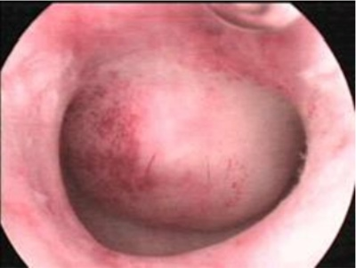

Paciente de 62 anos de idade, menopausada há 10 anos, sem uso de Terapia Hormonal. Começou a apresentar sangramento genital intermitente, de moderada a grande quantidade. Ao exame especular, seu colo uterino não apresentava lesão e foi visto que este sangramento era proveniente do útero. É obesa, diabética e hipertensa. Foi submetida a ultrassonogra a pélvica, que mostrou espessamento endometrial (linha endometrial de 2,1cm). Sendo sua hipótese um Sangramento Uterino Anormal (SUA), qual das alternativas abaixo é uma hipótese diagnóstica para essa paciente?
Uma paciente de 48 anos de idade, tabagista, com antecedente familiar de trombose, refere miomatose uterina diagnosticada há cinco anos e queixa de irregularidade menstrual e menorragia há um ano, associada à dismenorreia nos dias de uxo menstrual mais intenso. Refere ainda ondas de calor esporádicas, sem prejuízo da qualidade de vida. Nega doenças crônicas e uso de medicações. No momento, sem sangramento. Ao exame, paciente em bom estado geral, corada, hidratada e com abdome ácido e indolor. Especular sem alterações. Ao toque vaginal, útero pouco aumentado de tamanho, com cerca de 11 cm no maior eixo, contornos irregulares e indolor à mobilização. Anexos não palpáveis. Realizou USG, que evidenciou útero em anteverso exão, com volume de 198 cm³ , miométrio heterogêneo às custas de quatro formações nodulares, hipoecogênicas, medindo até 3 cm, subserosos com menos de 50% de penetração no miométrio e outro nódulo de 2 cm intramural em parede fúndica, sem contato com linha endometrial. Com base nesse caso hipotético, assinale a alternativa que apresenta a conduta mais adequada.
JABB, 43 anos, apresenta sangramento uterino anormal. Nessa faixa etária, a causa mais comum é:
A teoria que explica o sangramento intermenstrual discreto e limitado que acontece em mulheres não usuárias de anticoncepção hormonal é:
Em 2011 a FIGO desenvolveu um sistema de classificação para causas de sangramento uterino anormal em mulheres não grávidas em idade reprodutiva denominada PALM-COEIN. Fazem parte das causas classificadas como estruturais:
Paciente de 40 anos apresenta sangramento menstrual excessivo com o seguinte achado histeroscópico: Qual é o tratamento mais adequado?

Paciente de 45 anos de idade, com sangramento genital em grande quantidade, há 3 dias. Ao exame, encontra-se descorada, porém normotensa. O exame físico mostra presença de grande quantidade de sangue e coágulos na vagina, sem lesões visíveis. A ultrassonogra a pélvica mostra útero e ovários normais. As medicações que podem melhorar o sangramento genital nesse momento são
A.L.F., 57 anos, com história de pequeno sangramento pós-menopausa. Exame físico sem alterações. Fez uma ultrassonogra a transvaginal que evidenciou um eco endometrial homogêneo medindo 2 mm. Qual o provável diagnóstico e a conduta mais adequada, respectivamente?
O sangramento uterino anormal de causa endometrial (SUA-E), de característica intermenstrual, pode ser consequência de infecção uterina (endometrite) por:
Em pacientes na pós-menopausa sem reposição hormonal, a causa mais frequente de sangramento uterino anormal é:
A hipótese diagnóstica mais provável de sangramento uterino anormal na adolescência é:
Tratamento do sangramento uterino anormal agudo SGA, 50 anos é atendida em emergência com queixa de volumoso sangramento via vaginal, coágulos e tonteira. Ao exame físico a paciente apresentava-se com anemia importante. Após exames complementares de urgência foram excluídas causas orgânicas e o caso foi classificado como sangramento uterino disfuncional (SUD). A melhor opção para o tratamento clínico da menorragia aguda é
Ovulatório Distúrbios Paciente de 41 anos apresenta sangramento uterino volumoso, porém com ciclos regulares, e se encontra estável hemodinamicamente. Os exames de imagem (ultrassonogra a e histeroscopia com biópsia) mostram útero sem lesões estruturais. Não foram identi cadas coagulopatias, lesões endometriais ou causas iatrogênicas. O diagnóstico provável do sangramento e uma terapia não hormonal, para o caso em questão, respectivamente, são:
Paciente com 65 anos, nuligesta, menopausa há 15 anos. É hipertensa controlada. Peso = 58Kg e altura = 1,52m. Fez reposição hormonal com estrogênio e progesterona por 5 anos, tendo suspendido há 10 anos. Com sangramento vaginal há 3 meses, em pequena quantidade e com duração de 1-2 dias. Exame especular: sangue pelo orifício externo do colo uterino. Pode-se afirmar que a causa mais frequente deste sangramento é:
Na hemorragia uterina disfuncional a melhor opção de tratamento é:
Mulher, 36 anos, com sangramento vaginal de início hoje, comparece na emergência. Hipocorada 2+/4, frequência cardíaca 110 bpm, pressão arterial 90x60 mmHg. Abdômen sem massas e indolor. Exame especular com colo epitelizado e sangramento intenso exteriorizando pelo orifício externo do colo. Toque vaginal com útero intrapélvico, indolor a mobilização. Beta HCG negativo. Ultrassom transvaginal com mioma submucoso de 4 cm. Qual a conduta imediata, além de hidratação venosa e solicitação de reserva de sangue?
Assinale a alternativa incorreta em relação sangramento uterino anormal (SUA):
Mulher de 25 anos, solteira, sem parceiro sexual xo, sexualmente ativa, refere uso ocasional de preservativos. Procura atendimento ginecológico por queixa de sangramento vaginal irregular, com ciclos menstruais prévios regulares, sem uso de método anticoncepcional. Na investigação de sangramento uterino anormal, neste caso, o PRIMEIRO exame a ser solicitado é:
Em relação ao sangramento uterino anormal (SUA), atribua V (verdadeiro) ou F (falso) às afirmativas a seguir. ( ) Sangramento intermenstrual é a manifestação clínica mais comum dos pólipos endometriais. ( ) O sangramento uterino irregular é mais comumente associado à disfunção ovulatória. ( ) As malformações arteriovenosas uterinas são causas frequentes do SUA. ( ) Os distúrbios de coagulação, geralmente se apresentam como sangramento intenso na menarca ou nas mulheres em seus últimos anos reprodutivos. ( ) A doença inflamatória pélvica (DIP) com endometrite é uma etiologia rara de SUA. Assinale a alternativa que contém, de cima para baixo, a sequência correta.
Uma paciente com 58 anos, G2P2A0, aposentada, chega ao pronto-socorro com sangramento uterino anormal iniciado há um dia. Relata menopausa há três anos, sem uso de TH. A sua última consulta ginecológica foi há três anos, com rotina de exames ginecológicos normais. Diabética e hipertensa, faz uso de hipoglicemiante oral e anti-hipertensivo; porém, de forma irregular. Ao exame clínico, constatou-se bom estado geral; PA: 140X90mmHg; pulso de 88bpm; aparelho cardiovascular: bulhas normofonéticas, ritmo cardíaco regular em 2T, aparelho respiratório: murmúrio vesicular siológico, ausência de ruídos adventícios; abdômen: plano, ácido, sem visceromegalias. Ao exame ginecológico, veri cou-se genitália externa sem alterações e presença de pequena quantidade de sangramento. Considerando o caso descrito, assinale a alternativa que apresenta o procedimento que o médico DEVE realizar na emergência.
Como conduzir de forma mais adequada sangramento uterino anormal em menina de 12 anos com exame físico e propedêutica complementar normais:
Menina com 11 anos é trazida à emergência por sua mãe, por causa de sangramento vaginal abundante. O exame ginecológico não evidenciou lesões genitais, apenas o sangramento ativo; palidez cutânea, PA 90 X 40 mmHg, FC: 100 bpm, hemoglobina abaixo de 12g/dl; USG pélvica e coagulograma normais. Mediante o quadro clínico apresentado e resultado dos exames, qual a conduta mais adequada?
Paciente, 15 anos, vai ao consultório com queixa de sangramento vaginal aumentado mais dor tipo cólica. Paciente relata que, desde a menarca com 11 anos, apresenta ciclos irregulares com uxos aumentados, utilizando absorventes noturnos, com duração de 10 dias. Nega relação sexual e também o uso de medicações. AP: nega cirurgias prévias, relata hemorragia, quando extraiu dente há 2 anos. AF: desconhece. Assinale a alternativa com a conduta correta para esse caso.
Mulher de 66 anos comparece à consulta na UBS e relata estar em uso de metformina, glibenclamida, anlodipina e hidroclorotiazida há 10 anos. IMC 40,2Kg/m². Informa seis partos sem intercorrências e última menstruação aos 50 anos. Nega uso de terapia hormonal. Não realiza consultas médicas ou exames complementares há três anos. Informa episódios eventuais de sangramento vaginal leve com evolução progressiva nos últimos quatro meses. A conduta inicial MAIS ADEQUADA é solicitar:
Sobre o sangramento uterino anormal está correto afirmar:
Paciente 40 anos, nuligesta, evolui com sangramento menstrual irregular há 6 meses. Traz beta-hCG negativo. Diante do exposto e considerando a classificação PALM-COEIN (FIGO,2011), que divide as causas de sangramento uterino anormal (SUA) em estruturais e não estruturais, qual alternativa CORRETA?
A classificação PALM-COEIN, da Federação Internacional de Ginecologia e Obstetrícia (FIGO) para sangramentos uterinos, define como tratamento de primeira linha para, o sangramento uterino em mulheres de baixo risco para câncer de endométrio, com ultrassonografia normal, excluídas as causas estruturais e comorbidades, os
Algumas desordens ginecológicas, como a síndrome pré-menstrual, o mioma uterino e o sangramento uterino anormal, afetam milhares de mulheres, ocasionando transtornos emocionais, sintomatologia dolorosa e anemia. Entre essas desordens,
Paciente 18 anos com 5 semanas de amenorreia deu entrada na maternidade referindo aparecimento de sangramento transvaginal de pequena monta após coito vaginal. A conduta inicial adequada para o caso:
Mulher, 55 anos, menopausa aos 50, vem ao ambulatório com queixa de sangramento genital em pequena quantidade, por dois dias, há uma semana. Nega terapia de reposição hormonal e traz ultrassom transvaginal que mostra útero medindo 100cm³, endométrio de 3mm e ovários não identi cados. Diante desse caso clínico, qual a conduta mais adequada a seguir?
Mulher, 25 anos, nuligesta, uso de condom como contraceptivo, nega comorbidades ou uso de medicações, procura atendimento com sangramento transvaginal intenso há mais de 15 dias. Apresenta nos antecedentes ginecológicos ciclos regulares com sangramento de uxo progressivamente aumentado por 10 dias. Exame físico ginecológico sem alterações. Realizou B-HCG sanguíneo, cujo resultado foi negativo. Qual é a investigação inicial mais adequada para iniciar a propedêutica complementar da hemorragia uterina anormal?
Paciente de 42 anos, GIII PIII A0, em uso de DIU de cobre há 8 anos. Comparece ao ambulatório de ginecologia geral queixando-se de sinusorragia há 8 meses, com aumento progressivo da frequência dos episódios. Nega uso de medicamentos e nega também desejo de ter mais filhos. A conduta mais adequada para essa paciente, neste momento é:
Paciente 14 anos foi ao ginecologista referindo irregularidade menstrual. A menarca foi há 6 meses. Qual a hipótese diagnóstica mais provável?
Mulher climatérica, de 46 anos, com história de ciclos irregulares quanto aos intervalos, aumento do uxo durante a menstruação, com dismenorreia secundária, apresenta à ultrassonogra a mioma intramural, com maior diâmetro de 2,0 cm. Qual é o provável diagnóstico?
Paciente de 38 anos, G3P3, relata aumento do uxo menstrual e da duração da menstruação há oito meses. Nega uso de contraceptivos há um ano porque seu marido é vasectomizado. Seu último preventivo foi realizado em 04/2018 com laudo de negativo para malignidade. A MELHOR CONDUTA propedêutica inicial seria solicitar:
Adolescente de 13 anos e 6 meses apresenta sangramento vaginal em grande quantidade com saída de coágulos há um dia. AP: menarca aos 12 anos, nega vida sexual ativa. Exame físico: PA 80 x 50 mmHg, descorada 3+/4, FC 110 bpm. A conduta inicial é
Adolescente de 13 anos, virgem, com menarca aos 12 anos, deu entrada no serviço de emergência com sangramento transvaginal intenso. Fez ecogra a pélvica que mostrou útero e anexos normais. Hematócrito 32% Hb 9 g%. Estudo da coagulação normal. Qual a conduta?
Paciente de 13 anos, menarca há 2 meses, chega na emergência do Hospital com hemorragia há 2 dias. Ao exame: mucosas descoradas +++/4+, dispneica, hímen íntegro e saída de sangramento via vaginal em quantidade acentuada. Ao Ultrassom pélvico, útero e ovários normais para a idade. Não foi possível avaliar o endométrio devido a presença de coágulos intra-útero e por ser via suprapúbica. Qual a hipótese mais provável para este caso?
Uma mulher de 49 anos procura atendimento referindo hipermenorreia há 1 ano. Refere ciclos menstruais de 50 a 60 dias. Sem outras queixas. Realizou ultrassonografia transvaginal que demonstrou um útero com volume de 80 cm³, com superfície irregular e 3 nódulos hipoecogênicos subserosos, o maior deles medindo 1,5 cm × 1,1 cm nos seus maiores eixos, e endométrio com 0,6 cm de espessura. A causa mais provável da hipermenorreia é:
Joelma, 48 anos, com queixa de sangramento uterino aumentado há 6 meses, quando o intervalo entre as menstruações é irregular, variando entre 25 a 60 dias, nega uso de medicamentos ou comorbidades. Última colpocitologia oncológica do ano anterior normal. DUM há 15 dias; GII PII (partos vaginais). Exame físico: sem alterações significativas. Fez ultrassonogra a transvaginal com útero em anteverso exão, com dois miomas intramurais de 2,5 cm cada. Endométrio com 6 mm. Ovários não visualizados. Marque a opção compatível com a principal hipótese diagnóstica.
Em pacientes adolescentes a causa mais comum de sangramento uterino anormal é:
Mulher 48 anos, sem comorbidades, procura atendimento médico com queixa de "menstruação excessiva". Refere que, há um ano, vem apresentando metrorragia intercalada com períodos de amenorreia. Ultrassonogra a transvaginal recente, sem alterações. O tratamento indicado para controle do sangramento inclui o uso de:
O sangramento uterino anormal é uma queixa ginecológica comum que afeta mulheres em todas as idades. A menstruação cíclica regular requer relação perfeita entre o endométrio e seus fatores de regulação. Os fatores que mais in uenciam na incidência são a idade e o estado reprodutivo. Com relação ao grupo populacional e à causa mais frequente do sangramento anormal, considere as afirmativas a seguir. I. Na idade reprodutiva, a principal causa está relacionada a tumores do trato genital, principalmente tumores ovarianos produtores de estrogênio. II. Na fase da adolescência, o sangramento anormal resulta, geralmente, de ciclos anovulatórios e de imaturidade do eixo hipotálamo-hipófise-ovário. III. Na perimenopausa, o sangramento é, geralmente, anovulatório e relacionado à disfunção do eixo hipotálamo-hipó se- ovário. IV. Na menopausa, a principal causa está relacionada à atrofia genital. Assinale a alternativa CORRETA.
Paciente de 72 anos, menopausa aos 43 anos, G3P3, sem uso de terapia hormonal, procura o ginecologista por queixa de sangramento vaginal. Faz parte da propedêutica inicial:
Paciente de 19 anos, virgo, com queixa de sangramento uterino anormal (ciclos com intervalos regulares e uxo aumentado), encontra-se há 7 meses em tratamento clínico (ácido tranexâmico, inibidores de prostaglandina e contraceptivos hormonais orais), porém sem melhora. Relata ciclos anteriores regulares. Realizou exames complementares: ultrassonogra a pélvica normal, hemoglobina = 9,8 g/dl e hematócrito = 30%. O exame físico não detectou anormalidades. A conduta mais adequada para o caso é:
Mulher de 51 anos refere ciclos menstruais menorrágicos há 07 meses. Ciclos anteriores regulares. Traz FSH= 30,0 mUI/ml e TSH = 2,0 μUI/ml. Ultrassonografia transvaginal e mamografia foram normais. A conduta mais adequada para o caso é:
Qual a causa mais frequente de sangramento genital na paciente pré-púbere?
Na urgência, a alternativa de tratamento em sangramento uterino anormal com menor chance de sucesso é
O Sangramento Uterino Anormal (SUA) tem como definição a perda menstrual excessiva, com repercussões físicas, emocionais, sociais e materiais na qualidade de vida da mulher. É condição que afeta até 40% das mulheres em todo mundo, impactando de forma negativa a vida dessa população. Em relação ao tratamento do SUA, são escolhas de alta eficácia:
Paciente 18 anos, G0 P0, histórico de ciclos menstruais regulares, sem cólicas, e com duração do uxo de cinco dias, sendo mais intenso nos três primeiros dias do ciclo e em pequena quantidade nos últimos dois dias. Procurou a emergência, acompanhada pelo namorado. Refere que iniciou quadro de hemorragia genital intensa e súbita, há 3 horas, associado a palidez de mucosas, hipotensão arterial e astenia. Relatou estar no 8º dia do ciclo menstrual e que o sangramento iniciou logo após o coito, nega uso prévio de mediações e refere boa saúde. Utiliza condon como método contraceptivo. Neste caso a conduta a ser tomada é
Paciente 18 anos, G0 P0, histórico de ciclos menstruais regulares, sem cólicas, e com duração do uxo de cinco dias, sendo mais intenso nos três primeiros dias do ciclo e em pequena quantidade nos últimos dois dias. Procurou a emergência, acompanhada pelo namorado. Refere que iniciou quadro de hemorragia genital intensa e súbita, há 3 horas, associado a palidez de mucosas, hipotensão arterial e astenia. Relatou estar no 8º dia do ciclo menstrual e que o sangramento iniciou logo após o coito, nega uso prévio de mediações e refere boa saúde. Utiliza condon como método contraceptivo. Neste caso a hipótese diagnóstica é
Analise as opções a seguir e assinale a CORRETA.
Adolescente 13 anos apresenta ciclo menstrual com intervalos irregulares, com duração e uxos excessivos. A hipótese mais provável para as alterações menstruais na adolescente é:
Qual a causa mais frequente de sangramento genital na pós menopausa, sem terapia hormonal?
Uma adolescente, que começou a apresentar ciclos menstruais aos 13 anos, hoje os apresenta menores que 21 dias e com o período menstrual maior que 8 dias. Esses eventos são, respectiva e corretamente, denonimados:
Paciente de 70 anos de idade, GI P0 AI, menopausa aos 50 anos, obesa, hipertensa, apresenta sangramento vaginal que iniciou há 2 meses. Nega uso de terapia hormonal. Traz consigo ultrassonogra a transvaginal realizada há 1 mês que evidenciou um endométrio de 10 mm. O exame ginecológico não mostrou lesão em vagina e colo. A propedêutica mais eficaz para a investigação do sangramento é:
Paciente de 65 anos, menopausada há 10 anos, procura o ambulatório de ginecologia queixando-se de sangramento vaginal há um mês. É obesa, diabética e hipertensa não bem controlada. Ao exame colo uterino de aspecto normal, ausência de sangramentos, útero e anexos impalpáveis ao toque. Qual a melhor conduta?
Mulher menopausada há 10 anos, sem fazer uso de nenhuma medicação hormonal, apresentou história de que, por três vezes, teve sangramento vaginal no último mês. Procurou o ambulatório de ginecologia. Qual é o diagnóstico mais provável?
Uma mulher de 37 anos, negra, nulípara, procura a UBS com queixa de sangramento vaginal irregular, durando quase todo o mês; está assim há seis meses e vem piorando. Ao exame ginecológico, o médico identi ca que o útero está aumentado de volume. Frente a esse quadro, qual exame de imagem deve ser realizado e o que se espera dele?
Revisar: possível letra faltando em enunciado
Uma paciente de 41 anos de idade procurou o PS com queixa de sangramento vaginal de moderada intensidade, com a saída de coágulos, há três horas. Refere irregularidade menstrual com piora progressiva nos últimos seis meses e ser laqueada. Nega doenças, uso de medicações e tabagismo. Ao exame físico, apresentava-se descorada e com PA de 120 x 80 mmHg. O exame abdominal não mostrou alterações. Ao exame especular, observou-se presença de coágulos na vagina, com a saída de sangue pelo orifício externo do colo uterino, e, ao toque, útero em anteverso exão, com tamanho normal e regiões anexiais livres. Com base nesse caso hipotético, é CORRETO a rmar que o diagnóstico e a melhor conduta, considerando-se a eficácia e a segurança, sejam, respectivamente:
Mulher de 72 anos de idade, 4G 4P, sem comorbidades, refere apresentar pequeno sangramento pela vagina, há uma semana. Ao exame físico, vagina, colo do útero e corpo uterino estão normais para a idade. O diagnóstico mais provável é de:
Em relação à hemorragia que acontece no meio do ciclo menstrual, assinale a afirmação CORRETA.
Paciente 25 anos, chega a consulta com queixa de sangramento vaginal moderado há 3 dias, com discreta quantidade de coágulos e dor abdominal tipo cólica de moderada intensidade. Ao exame apresenta abdome plano flácido pouco doloroso à palpação profunda em hipogástrio, sem visceromegalias, ruídos hidroaéreos presentes. Ao exame especular não se observou anormalidades. Ao toque vaginal bimanual apresentou útero de volume habitual, colo uterino impérvio, sem dor à mobilização do colo e anexos impalpáveis. Exame betahcg não reagente. Das opções listadas abaixo, são alternativas para o controle do sangramento uterino anormal, EXCETO:
Paciente com 51 anos, em menopausa há dois anos. Há um mês teve episódio de dor pélvica moderada, isolada. Sem cirurgias prévias ou sangramento vaginal pós- menopausa. Ultrassonogra a (USG) transvaginal: útero de dimensões normais, ovários não visualizados e espessura endometrial de três milímetros. A conduta mais adequada é:
Myrna, 59 anos, refere sangramento uterino (episódio único e em pouca quantidade) há três semanas. Menopausa: 49 anos. G3 P3 A0. Exame clínico-ginecológico normal, exceto pela atro a vulvovaginal. IMC: 23 kg/m². PA: 110 x 70 mmHg. A conduta inicial é:
Mulher de 48 anos, refere sangramento uterino anormal há 8 meses, quando percebeu que seu uxo menstrual aumentou de duração, passando de quatro para oito dias, e de volume, apresentando atualmente perda de coágulos. O intervalos entre as menstuações é irregular, variando entre 20 e 55 dias. Nega uso de medicamentos ou comorbidades. Última colpocitologia oncológica do ano anterior normal. DUM há 15 dias; GII PII (partos vaginais). Exame físico: hipocorada +/+4; IMC=27 Kg/m²; exame abdominal, vulvar, vaginal, do colo e útero, normais. Fez ultrassonogra a transvaginal com útero em anteverso exão, com dois miomas intramurais de 2 e 1,5 cm cada. Endométrio com 8 mm. Ovários não visualizados. Qual a principal hipótese diagnóstica?
Mulher de 47 anos de idade deu entrada na emergência com queixa de menorragia há mais de sete dias e ciclos menstruais irregulares no último ano. Referiu menarca aos 12 anos, G3P3 (três cesarianas) e realizou ligadura tubária no momento da cesariana do último lho. Ao exame apresentava-se hipocorada +++/+4, PA 80x50 mmHg, frequência cardiaca de 118 bpm, abdome e pelve sem massas palpáveis, colo regular e presença de sangramento uterino moderado ao exame especular. Realizou hemograma (hematócrito de 18%, hemoglobina de 6,7g/dL, 220.000 plaquetas) e ultrassonogra a transvaginal que não apresentou alterações. A conduta médica recomendada nesse caso é:
Sangramentos vaginais são aqueles de origem ginecológica e que se exteriorizam pela vulva, excetuando-se, desse modo, aqueles de origem obstétrica. Com relação ao sangramento vaginal é correto afirmar que:
Paciente de 25 anos, virgo, vem ao consultório referindo ciclos menorrágicos há 04 meses. Sem outras queixas. Ciclos anteriores regulares. Nega uso de medicamentos de qualquer natureza. IMC=22. Exame físico geral e ginecológico normais. Assinale a opção CORRETA.
Paciente feminina, 40 anos de idade, chega ao pronto-socorro com queixa traduzida por hipermenorreia. Tem sinais clínicos de anemia. Já possui diagnóstico rmado de sangramento uterino disfuncional, por especialista na área. Assinale a alternativa que apresenta, corretamente, a melhor conduta nesse caso.
Adolescente, 12 Nos 4 primeiros dias elimina coágulos e necessita de 9 absorventes por dia. Antecedente pessoal: menarca há 15 meses. Nega atividade sexual. Exame físico: descorada 2+/4+, hímen integro, com saída de coágulos ao esforço (tosse). O diagnóstico é
Em relação aos métodos diagnósticos nos sangramentos genitais, marques a alternativa CORRETA:
Paciente de 13 anos, menarca há 6 meses, admitida no pronto atendimento com história de sangramento menstrual excessivo há 5 dias. Nega atividade sexual, mas a entrevista foi realizada na presença da mãe. Solicitado eritrograma na urgência que mostrou hemoglobina de 8,5g% e hematócrito de 22%. Teste de gravidez negativo. PA de 80x40mmHg e pulso de 120bpm. Assinale a alternativa que apresenta o diagnóstico MAIS provável.
A Federação Internacional de Ginecologia e Obstetrícia (FIGO) indicou o Sistema PALM-COEIN para sistematizar a investigação de qual problema ginecológico?
Sangramento uterino anormal no menacme, com perda da ciclicidade, associado a períodos de amenorreia, com FSH, TSH e prolactina normais, sem prole definida, tem como primeira opção terapêutica
Paciente de 42 anos procura a emergência de atendimento ginecológico por apresentar sangramento uterino intenso no período menstrual, dismenorreia intensa agravada no último ano e dispareunia, que torna a atividade sexual um grande sofrimento pela dor. O grupo em que essa doença pode ser considerada pela classificação PALM-COEIM, de acordo com a FIGO, o diagnóstico e a alteração uterina que pode ser encontrada no exame de toque vaginal são, respectivamente:
P.N.M., 13 anos, apresenta ciclos menstruais regulares de 28 dias desde a primeira menstruação, aos 11 anos. No último mês, necessitou procurar o pronto atendimento por sangramento vaginal em grande quantidade, inclusive necessitando de transfusão sanguínea. No exame físico atual, apresenta mucosas descoradas 2+/4, sem outras alterações relevantes. Qual é a conduta mais adequada para esse caso?
Mulher de 40 anos refere sangramentos menstruais excessivos nos últimos 5 ciclos, que se apresentam com intervalo de 30 dias, duração de 7 dias e perda de coágulos. Nega comorbidades, uso de medicamentos, cirurgias prévias e alergias. Antecedente de 2 partos vaginais, último há 10 anos. Marido vasectomizado. No momento, o sangramento é intenso, terceiro dia do ciclo. Ao exame clínico: FC = 90 bpm; PA = 120 x 80 mmHg; abdome flácido indolor. Exame especular: colo epitelizado e grande quantidade de sangue na vagina com exteriorização pelo canal cervical. Exame pélvico com útero em anteversoflexão, não doloroso, tamanho normal e regiões anexiais livres. Neste momento, a medicação mais adequada para o controle do sangramento é:
Em relação ao sangramento uterino disfuncional, analise as assertivas a seguir: I – É característico de ciclos anovulatórios, sendo muito comum logo após a menarca e na perimenopausa; II – Pólipo endometrial e miomatose uterina são causas comuns; III – Os anticoncepcionais combinados orais e os antifibrinolíticos são opções terapêuticas. Está/estão CORRETA (S):
Em relação à irregularidade menstrual, analise as assertivas a seguir: I – Na presença de irregularidade menstrual em mulher sexualmente ativa, é necessário descartar gravidez; II – Nos dois primeiros anos pós-menarca, a irregularidade menstrual pode ser siológica, por imaturidade do eixo hipotálamo-hipófise-ovário; III – Na perimenopausa, é comum irregularidade menstrual por anovulação; IV – Na irregularidade pós-menarca, a causa patológica mais comum é a síndrome dos ovários policísticos.
Paciente de 25 anos em uso de Anticoncepcional Combinado Oral (ACO), com 20 mcg de etinilestradiol há 1 ano apresenta sangramento intermenstrual (spotting) há 60 dias. Nega doenças crônicas ou uso de outros medicamentos. Refere que, às vezes, esquece de tomar o ACO e que tem parceiro sexual único. Além do exame ginecológico, qual a conduta imediata mais adequada?
Mulher, 47 anos, atendida com sangramento transvaginal intenso há cinco dias. Relata que nos últimos 18 meses o uxo menstrual está irregular com intervalo variando entre 20 e 50 dias e o uxo está intenso neste mesmo período. Gesta 2 Para 2 (partos cesáreos) e laqueadura tubária há 15 anos. Vida sexual ativa, parceiro xo, não faz uso de condom. Nega uso regular de medicamentos. Não é atendida por nenhum médico há cinco anos. Exame Físico: sinais vitais normais, sem sinais de hipovolemia. Exame pélvico normal, útero intrapélvico, móvel e indolor. Colo do útero normal com sangue saindo pelo orifício externo do canal endocervical. Retorna após 7 dias, trazendo exames realizados e solicitados pelo médico assistente. Ultrassonogra a transvaginal: útero AVF, medindo 78 x 65 x 59 mm, endométrio com 13 mm, nódulo uterino medindo 3 cm, subseroso; ovário direito não identi cado; ovário esquerdo com cisto anecoico medindo 19 x 13 mm. Colpocitologia Oncótica: amostra satisfatória, epitéliosescamoso e metaplásico, processo inflamatório inespecí co, negativo para neoplasia. A hipótese diagnóstica, mais provável, do sangramento uterino anormal é
Revisar: possível letra faltando em enunciado
O primeiro exame a ser solicitado para uma paciente com sangramento uterino anormal no menacme deve ser:
A conduta no sangramento pós-menopausa com ultrassonografia pélvica normal é:
Paciente com 31 anos de idade procura pronto-atendimento de ginecologia relatando uxo menstrual abundante, com duração de 6 a 7 dias em cada ciclo, tendo iniciado há 9 meses, ciclos menstruais irregulares (intervalo de 38 a 40 dias). Gesta 2 Cesárea 2. No momento, paciente com sangramento via vaginal intenso. Tem histórico de laqueadura tubária. Pressão arterial 100 x 60 mmHg. Frequência cardíaca 110 batimentos por minuto. No histórico médico pessoal, refere uso de levotiroxina 75 mcg/dia. Vem com os seguintes exames: TSH 2,8 mU/L. Hemoglobina 5,9 g/dL. Hematócrito 21%. Plaquetas normais. Ecogra a pélvica endovaginal: volume uterino 130 cm³. Endométrio 10 mm, ovários com volumes normais. Com base no exposto, qual a melhor conduta?
De acordo com o guia prático da FEBRASGO 2014/2015 intitulado Tratamento do sangramento uterino anormal (Menorragia) existe uma terminologia universal para as variações do sangramento uterino anormal, segundo esta terminologia denomina-se polimenorreia:
Com relação ao sangramento uterino disfuncional na idade reprodutiva da mullher, assinale a alternativa ERRADA:
APJ, 16 anos, feminina, com queixa de hipermenorreia, com anemia ferropriva. Ultrassonogra a endovaginal mostrou útero e anexos normais. Ao exame especular, vagina e colo uterino normais, sendo classificado como sangramento disfuncional. Observe as afirmativas abaixo e assinale a incorreta.
Mulher 19 anos, nuligesta, procura a UBS pois refere que seus ciclos estão irregulares e o número de dias de sangramento está aumentando. Você pediu um calendário menstrual e 6 meses mais tarde, ela traz o calendário para a sua avaliação. Abaixo, estão listadas a duração de cada ciclo e do sangramento. 1° ciclo: 36 dias - 7 dias de sangramento. 2° ciclo: 26 dias - 5 dias de sangramento. 3° ciclo: 33 dias - 6 dias de sangramento. 4° ciclo: 30 dias - 8 dias de sangramento. 5° ciclo: 24 dias - 5 dias de sangramento. 6° ciclo: 34 dias - 8 dias de sangramento. Considerando os critérios de normalidade de ciclo menstrual da Federação Internacional de Ginecologia e Obstetricia, FIGO, 2007, observe o calendário menstrual acima e assinale a alternativa que apresenta a melhor conduta.
Adolescente, 12 anos, procurou consulta médica por estar menstruando a cada 40 a 50 dias, com uxo de duração de 9 dias. Nos 4 primeiros dias, elimina coágulos e necessita de 9 absorventes por dia. Antecedente pessoal: menarca há 15 meses. Nega atividade sexual. Exame físico: descorada 2+/4+, hímen íntegro, com saída de coágulos ao esforço (tosse). O diagnóstico é:
Menina, 3 dias de vida, alimentação em seio materno exclusivo, trazida à consulta por sangramento vaginal discreto. Ao exame físico, identificada mínima quantidade de sangue no introito vaginal, sem lesões visíveis. Qual a conduta a seguir?
Jéssica, 12 anos, última menstruação há 10 dias, foi levada por sua mãe em consulta com o médico de família por sangramento menstrual aumentado. Menarca há 6 meses, refere ciclo menstrual regular, porém com uxo intenso, com duração de 9 dias desde a menarca. Já recebeu transfusão de concentrados de hemácias em episódios anteriores de sangramento menstrual. Hoje está sem sangramento ativo. Assinale a opção que contém o provável diagnóstico e a conduta para esse caso:
A diarreia aquosa sem presença de sangue pode estar associada a diversos patógenos, EXCETO:
Mulher de 72 anos, hígida, refere saída de pequena quantidade de sangue pela vagina há um dia. Esse sangramento mancha a sua roupa, mas não apresenta coágulos e não é acompanhado de cólicas. A causa mais frequente dessa queixa clínica é:
Paciente de 8 anos de idade é levada pela mãe à consulta ginecológica devido a sangramento vaginal anormal. Apresenta desenvolvimento mamário no estágio 3 de Tanner. Entre as hipóteses diagnósticas abaixo, marque a alternativa ERRADA para esse caso: Respostas: 1 12 23 34 45 56 67 78 89